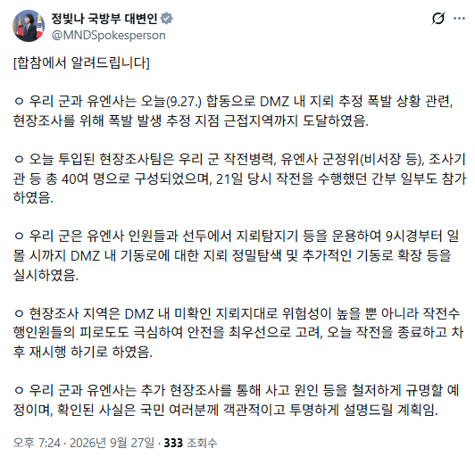

21일 지뢰 사고발생하고 153시간이나 지났는데 현장에 남아있는게 있을까

21일 지뢰 사고발생하고 153시간이나 지났는데 현장에 남아있는게 있을까
캬 조사하니까 쫄리는 빨갱이 새끼들 존나 많네ㅋㅋㅋ 걍 북으로 꺼지지 왜 여기서 지랄이여
북한 영토까지 가겠다는 것도 아니고 저기까지 가서 건드릴 사람 누가 있다고
비왔는데
뭔 사건터지면 얼른 조사하라고 좆지랄 하던 사람들 아니었음? 이럴땐 존나게 또 이성적인척하네ㅋㅋㅋ
우리 수색로에 북괴들이 지뢰 깔아놨으면 당연히 아군이 지뢰 밟을 수 있지
그럼 곧바로 긴급대응해서 북괴 소행인지 판별하고 전문장비에 인원들 투입해서 지뢰 수거하고 제거하고 이런 시스템이 당연히 갖춰져 있을거라 생각했는데
여기 댓글들 보면 국군은 아주 개병신이구나...
지금 꼬라지보면 북한이 목함지뢰로 도배해놓으면 대한민국 국군은 북으로 진격도 못하겠네
지뢰 한번 밟을때마다 며칠씩 준비해야 하니까
전쟁이였으면 지뢰제거차량 쓰든 폭격을 하든 밀어버리고 전진했을건데 지금 목적은 전진이 아니니까
지금은 조사목적으로 가는 거니까 유엔사와 협의 후에 들어가는 거지
지금도 그냥 제거차량 써서 밀어버리고 잔해만 수거해도 충분하잖아?
아니 이미 터진거만 수거해도 될거같은데
아니 수거가 필요한가?
그냥 드론 날려서 현장 바로 확인하면 되잖아?
전문가들이면 폭발형태만 봐도 알거같은데
'뭐라도 좀 하지 시발' 이게 대다수 국민의 생각일듯
그럴꺼면 조사 왜 함?
그냥 정황보고 비왔을때 지뢰 쓸려내려왔다하고 끝내면 되지
바디캠 촬영본 있으니 드론 띄울 필요도 없지
Fact) 유엔은 즉각 조사하자고 했다.
그거 펙트로 확인 된 사항임?
어느쪽이 그렇게 주장하고 있을 뿐인걸로 알고 있는데
연휴니까 추석끝나고 조사한다고 했던게 레전드ㅋㅋㅋ
휴일에 전쟁나면 휴일 다 끝날때까지 아무것도 안할듯
저거 조사하다가 지뢰 터지면 어떻게 되는거임
국방부 까던 사람들 도파민 치사량 진입하려나
목함지뢰면 금속 탐지기에도안걸린다고 하니;;;;
뜨로찔이라 일반 펄스 지뢰탐지기로는 못찾으니, 레이더 지뢰탐지기 들고가겠지
핵폭탄이 날라와도 신중하게 조사해야하니까 한 1년 있다가 조사해야겠네
댓글에 서두르는거다 조심해야한다 하는 놈들은
유엔사보다 전문가인거지?
유엔사에서는 사건 직후 조사 들어가자고 했는데, 추석이라고 국방부가 미룬건 알면서 씨부리나몰라
우연인지 의도인지 덕분에 비 내린 이후에 조사 들어가서 난이도도 더 올라간건 왜 암말도 안하는지 너무 투명해서 웃음이 나오네 ㅋㅋㅋㅋ
ㅈㄴ 신기한게 이 글 추천:비추천 비율에 따르면 그런 이상한 글 적는 애들이 수상할정도로 댓글추천받은게 이상할정도임 ㅋㅋㅋ
밭갈기 단톡방이라도 있나?
ㅋㅋㅋ그런것 같음
정사게에 글 올리고 화력 지원 요청이라도 하나
이런거 볼때마다 지뢰탐지기부터 싹 교체해야 할 것 같다. 멀쩡한거 들고 갔다고 해도 지뢰탐지기 대다수가 우리쪽 발목지뢰 유실된거 찾기에 최적화되어 있는거라. 하여간 노예는 어디선가 채워오면 되니 사람이 제일 싸지 에휴...
지뢰탐지기가 2천만원 넘는 지표투과방식이라
목함지뢰면 못잡을수가 없다던데 이게 의문임
실제로 탐지 장비의 문제가 아니면
전문가 의견대로 메뉴얼대로 운용 안했거나 뭔가 실수했고
아니면 북한이 심은게 목함지뢰가 아니란 소리임
메뉴얼대로 지탐기 안썻다고 치면
그 정도로 방심했다는건데
지금 얘기가 앞뒤가 안맞아서 혼란스러움
처음엔 비교적 안전한 지역이랬다가 새로 수색로 개척하다 벌어진거라고 하고 또 무슨 4~50m라던 발생지점이 미군 측 판단으론 그거보다 남측 mdl과 더 가까웠다 그러고
저런곳은 무인기계같은거 운용 못하나요? 무거운 기계가 먼저 지나가게 하고 지뢰탐지 ㅠㅠ 지형이 복잡해서 안되나요?